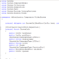

Tips Index
|  | Get a Picture of the Desktop's ContentsThis tip shows how to get a picture of the entire desktop. You can use the picture that you get to draw onto (perhaps as the basis for a screen saver), or as a basis for capturing areas of the desktop. Last Updated: 1 August 1998 |
Force an area of a Window to RepaintThis sample shows how to force an area of a window to repaint. Sometimes this is necessary, particularly when you're experimenting with owner draw control techniques, or when using the LockWindowUpdate API call to improve the speed at which a control fills with data. Last Updated: 1 August 1998 | |
Determine every format available on the clipboard, including custom formatsWhilst VB allows you to determine if the standard, recognised clipboard formats are on the clipboard, you can't determine if any other formats are present. So, for example, if you want to know if the clipboard contains data from Excel (which always pastes at least its own customised format called 'Wk1'), or if you want to determine whether Rich Text format is available to enable a Paste menu, you can't do it. Last Updated: 1 August 1998 | |